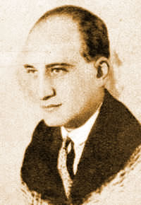

Rejtő Jenő
 Famouse Hungarian journalist, pulp fiction writer and playwright.Despite the "pulp" nature of his writings, he is not only widely read in Hungary, but is also much appreciated by literary critics. It is a prevalent opinion that he lifted the genre to the level of serious art, and his works will long outlive him.
In the early years of communism his works were only available on the black market as pre-war editions, but from the 1960s on, his novels were republished, and they gained instant popularity in Hungary (then still under communist rule). They elicit a cult following to this day. Some of his works have been made into films and comic books.
Rejtő's memory is kept alive in Budapest in various ways: in 2001 a street was named after him, while in 2003 there was an exhibition dedicated to him in the Petőfi Museum of Literature (Petőfi Irodalmi Múzeum). In 2005 his picture appeared on a Hungarian postage stamp, part of the series "Great Hungarians", and there is an initiative to erect his statue in Budapest.
- He was born in 1905 in Budapest
- Completed his studies in a drama school in 1924
- Travelled extensively throughout Europe
- Returned to Hungary, and made his living as a playwright, often with great success
- Started to write adventure novels based on his trips and experiences abroad
- His novels parodying the French Foreign Legion, written under the pseudonym P. Howard, reaped the greatest success. His novels were raised above mediocrity by his inimitable and bizarre sense of humour.
- Starting in 1939, he could not publish his novels any more under his own name because of his Jewish origins
- On October 9, 1942, an article in the Nazi Arrow Cross Party’s newspaper (Egyedül Vagyunk [We Are Alone]) exposed Rejtő as a Jew and reported that he was seen writing calmly in Budapest cafés while evading the labour service draft that was compulsory for Jewish men of military age
- He was seriously ill by this time but was taken by force from hospital to do his labour service on the eastern front
- He died as a forced labourer in 1943